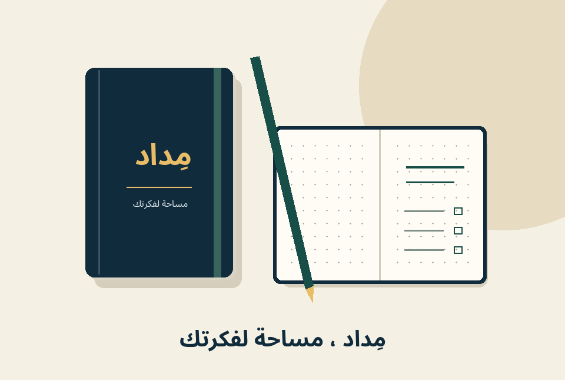

نسخة قصيرة لبطاقة المنتج
دفتر مِداد A5، بـ160 صفحة منقّطة وغلاف كحلي مقوّى. دوّن ملاحظاتك ورتّب مهامك، وارجع إلى آخر فكرة بشريط تحديد الصفحة.
نموذج تجريبي لكتابة وصف منتج؛ «مِداد» علامة افتراضية، والمواصفات توضيحية. الصفحة لا تبيع المنتج، ولم تُنفَّذ لصالح عميل.
اجمع ملاحظاتك وخططك ورسوماتك في دفتر واحد. يمنحك دفتر مِداد صفحات منقّطة لتكتب بحرية، وتترك لفكرتك الشكل الذي يناسبها.
اقرأ الوصف الكامل
بين فكرة سريعة ومهمة لا تريد نسيانها، تحتاج مساحة تجمع ما يهمك. دفتر مِداد بمقاس A5 يترك لك حرية تدوين الملاحظات، ورسم المخططات، وترتيب مهام اليوم دون قوالب ثابتة.
خصّص الصفحة الأولى لما تريد إنجازه هذا الأسبوع، ثم اترك مساحة لملاحظاتك اليومية. استخدم النقاط لتقسيم الصفحة إلى مهام وأفكار أو رسم جدول بسيط.
ابدأ الآن: ابدأ بصفحة واحدة، واترك لفكرتك مساحة.
قبل التحرير
دفتر مِداد بمقاس A5، يحتوي على 160 صفحة منقّطة من ورق عاجي بوزن 100 غرام/م². الغلاف كحلي مقوّى، ومعه رباط إغلاق وشريط لتحديد الصفحة. العبوة تحتوي على دفتر واحد، والقلم غير مشمول.
بعد التحرير · المواصفات في سياق الاستخدام
رتّب مهامك واترك لأفكارك مساحة في دفتر مِداد. يمنحك مقاس A5 و160 صفحة منقّطة حرية تقسيم الملاحظات والخطط على طريقتك، بورق عاجي بوزن 100 غرام/م². يحافظ الغلاف الكحلي المقوّى ورباط الإغلاق على ترتيب الدفتر أثناء الحمل، ويعيدك شريط الصفحة إلى آخر فكرة. تحتوي العبوة على دفتر واحد؛ القلم غير مشمول.
تعتمد الصياغتان المواصفات نفسها. المقارنة تشرح قرارات التحرير، ولا تدّعي قياس زيادة المبيعات أو تفضيل العملاء.
دفتر مِداد A5، بـ160 صفحة منقّطة وغلاف كحلي مقوّى. دوّن ملاحظاتك ورتّب مهامك، وارجع إلى آخر فكرة بشريط تحديد الصفحة.
من ملاحظة سريعة إلى خطة أسبوعية، يمنحك مِداد مساحة ترتبها بطريقتك. صفحاته المنقّطة تساعد على تقسيم المهام ورسم الجداول، ومقاس A5 يرافقك في الحقيبة. يحافظ الغلاف المقوّى ورباط الإغلاق على ترتيب الدفتر، بينما يعيدك شريط الصفحة إلى المكان الذي توقفت عنده. يحتوي على 160 صفحة بورق عاجي 100 غرام/م²؛ القلم غير مشمول.
النسخة القصيرة تقدّم المواصفات الأهم بسرعة، والمفصلة تربطها بمواقف الاستخدام دون إضافة وعود جديدة.
توضح لمن يناسب المنتج، وتربط الفكرة بموقف يومي.
كل فائدة مرتبطة بمواصفة محددة يمكن مراجعتها.
عناوين وقائمة مزايا ومواصفات نصية سهلة القراءة.